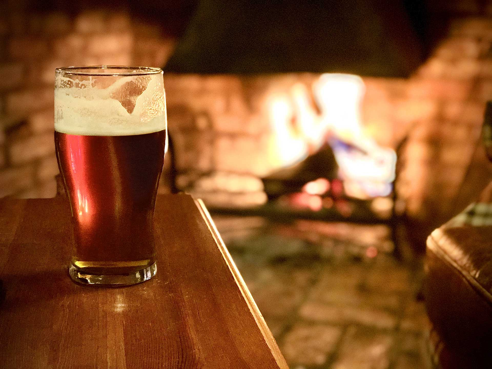

'Viking' Heather Ale

Description
Our 'Viking Ale' has turned out to be 5.5% ABV, which is unexpectedly strong… The recipe is based on one recounted to John Locke and published in the Ulster Journal of Archaeology in 1859.
Locke said he was told the tale by a peasant living in Cork in 1847 who claimed to be nearly 100 years old, and who said he got the story from his grandfather, which would take us to at least the late 1600s.
Ingredients
- Water
- Milled, malted barley
- Ling Heather
- Bog Myrtle
- Hot Rocks
Steps
- Add milled, malted barley to lightly heated water.
- Stir and bring the temperature to 65-67 degrees
- Wait a bit and sparge with more water
- Add ling heather and bog myrtle while bringing to a boil
- Throw in some hot rocks for a little caramel
- Transfer to fermentation vessel
- Wait a week and bottle
Back to main page